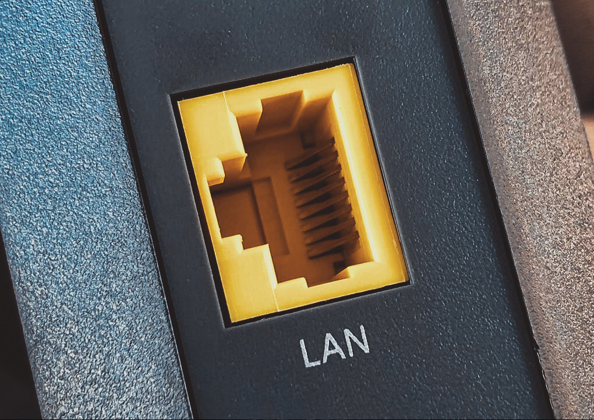
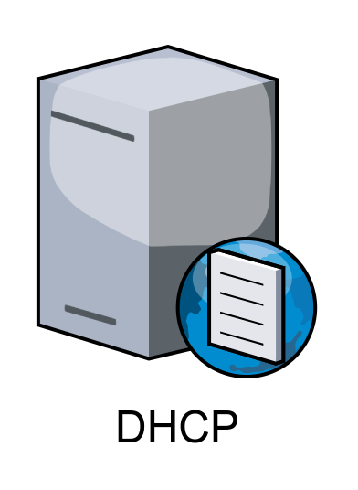
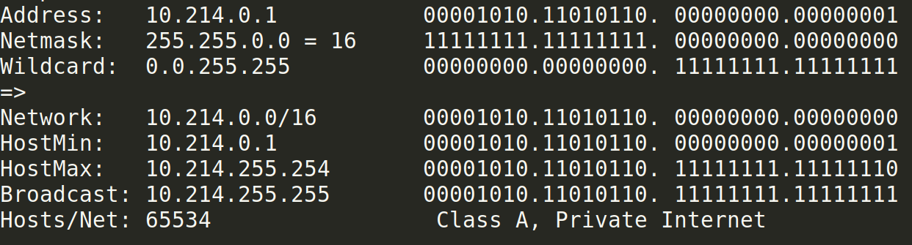
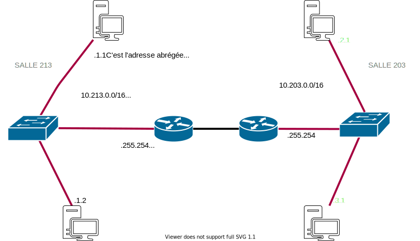

 Le LAN c'est le réseau local. Il contient des matériels connectés entre eux (PC, serveurs, imprimantes, bornes wifi, smartphone...).
Un switch permet l'échange de paquets ETHERNET entre deux stations situées sur le même LAN (Local Area Network). A l'IUT un LAN = une SALLE mais ils peuvent être plus étendus ou découplés du cable physique (Virtual LAN).
Un routeur permet l'envoi et la réception de paquets IP entre les réseaux. On dit qu'un switches sépare les domaines de collisions et un routeur les domaines de broadcast.
Un serveur DNS permet de traduire une adresse IP en nom de domaine (F.Q.D.N.) et réciproquement. L'adresse IP du DNS interne de l'IUT est 10.255.255.200
Un serveur DHCP est chargé de distribuer des adresses IP aux matériels (stations de travail, imprimantes...) présents sur le réseaux. Sa présence sur un réseau est utile afin de faciliter la gestion des adresses IP.

Chaque machine sur le réseau dispose d'une adresse IP. Elle est indispensable pour communiquer entre les stations réseaux. Un adresse IPv4 est un identifiant de 32 bits représenté par 4 octets. La notation est dite décimale pointée. A l'IUT chaque salle dispose d'un réseau supportant $2^{16}$ adresses privées.
Quand une station de travail envoie un datagramme IP vers une adresse, elle applique un ET logique avec le masque de son réseau afin d'obtenir le réseau du destinataire. Par le même mécanisme elle est à même de connaître aussi son réseau. Si les deux réseaux calculés sont différents le paquet IP est routé par la station vers sa passerelle par défaut.


Vous aurez besoin de connaître le nom de la carte réseau pour y ajouter une adresse IP.
apt -y install lshw # à faire une fois pour installer le paquet
sudo lshw -class network -short
Chemin matériel Périphérique Classe Description
==============================================================================
/0/100/1c/0 wlp2s0 network Wireless 8265 / 8275
/0/100/1c.4/0/1/0/1/0 enp12s0 network NetXtreme BCM57761 Gigabit Ethernet
/0/100/1f.6 enp0s31f6 network Ethernet Connection (5) I219-LM
/3 virbr0-nic network Ethernet interface
/4 lan-wrt-nic network Ethernet interface
/5 internetwrt-nic network Ethernet interface
Les cartes physiques ethernet commencent par 'en' ou 'eth' pour les machines virtuelles et les cartes wifi par 'w'.
Configurer une IP et une route par defaut sous Linux
ip address add 10.213.4.1/16 dev enp12s0
ip route add default via 10.213.255.254 dev enp12s0
Cette configuration ne résistera pas à un redémarrage du serveur. La configuration de la couche réseau de façon persistante se fait au travers du logiciel "netplan" qui permet de définir en langage Yaml la configuration de l'adressage sur une machine.
Le fichier de configuration se trouve sous /etc/netplan/01-netcfg.yaml.
network:
version: 2
renderer: networkd
ethernets:
enp12s0:
dhcp4: true
dhcp6: false
network:
version: 2
ethernets:
eth0:
addresses: [10.214.1.1/16]
gateway4: 10.214.255.254
nameservers:
addresses: [10.255.255.200]
dhcp4: false
dhcp6: false
Après modification du fichier yaml (attention l'indentation est essentielle) vous saisirez les commandes suivantes:
sudo netplan generate
sudo netplan apply
netplan ip leases eth0 # si dhcp
ip address show device eth0
networkctl
resolvectl
resolvectl query www.iutbeziers.fr
ip route show default